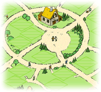

Tutoriales en texto
Lo básico
 Así es tu aldea al principio... |  ...y así como puede llegar a ser. |
Al principio tu aldea sólo tiene un edificio. | |
 1. Elige una casilla de recursos. |  2. Amplia el grado del recurso. |
Hay cuatro clases diferentes de recursos en Travian: madera, barro, hierro y cereal. | |
|  1. Elige una casilla para construir. |  2. Construye un edificio. |
Después de asegurar tu producción de recursos puedes continuar el desarrollo de la aldea. | |
 Tu aldea y alrededores. | |
No estás solo en Travian. Interactuarás con cientos de jugadores en cada mundo de Travian. |
 La barra de navegación. | |
Ahora ya conoces lo básico para jugar a Travian. ¡Resgístrate y empieza a jugar! |
Tutoriales de IRC
Esta es una colección de tutoriales que puedes usar para conectarte a irc.travian.com usando uno de los clientes (programas de chat) a continuación mencionados.